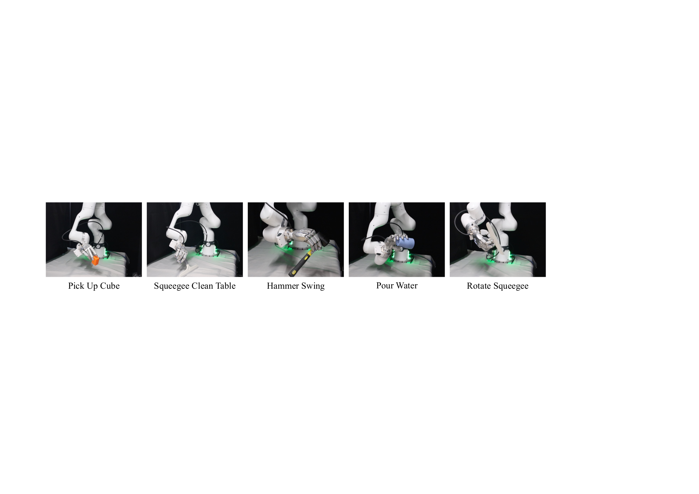

DEX-X
Learning Visual-Tactile Dexterous Manipulation
From Human Videos with Simulated Interaction

Abstract
Human videos are an abundant source of dexterous manipulation behaviors, but they lack tactile information that is crucial for contact-rich interaction. This raises a fundamental question: can robots learn deployable visual-tactile dexterous manipulation policies directly from human video demonstrations?
We present DEX-X, a framework for learning visual-tactile dexterous manipulation from human videos through simulation. Our key insight is that simulation can serve as a tactile completion engine. Given monocular human demonstrations, DEX-X reconstructs hand-object interactions in simulation, where physically grounded contact dynamics provide tactile supervision unavailable in the original videos. Leveraging this recovered tactile information, we train visual-tactile dexterous manipulation policies and distill them into deployable policies operating on point-cloud observations and tactile sensing.
We demonstrate zero-shot sim-to-real transfer on dexterous hand-arm platforms across diverse grasping and contact-rich tool-use tasks. The teacher policy achieves 65.9% average success across eight tasks in simulation, while the distilled visual-tactile policy achieves a 53% success rate on cube picking and 23% on the challenging real-world table-cleaning task, which is not achieved by existing general sim-to-real manipulation systems.
Our results suggest that tactile completion is a critical ingredient for scalable dexterous manipulation learning and provide a path toward learning real-world robot skills from Internet-scale human video data.
Pipeline

Real-world Demonstrations
Real-world Snapshots
